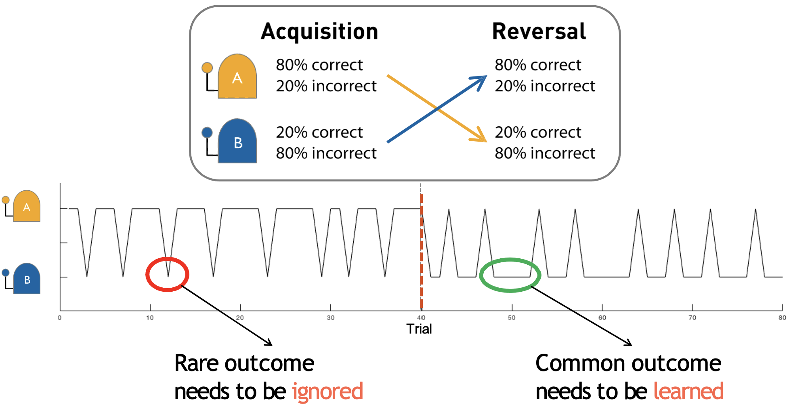
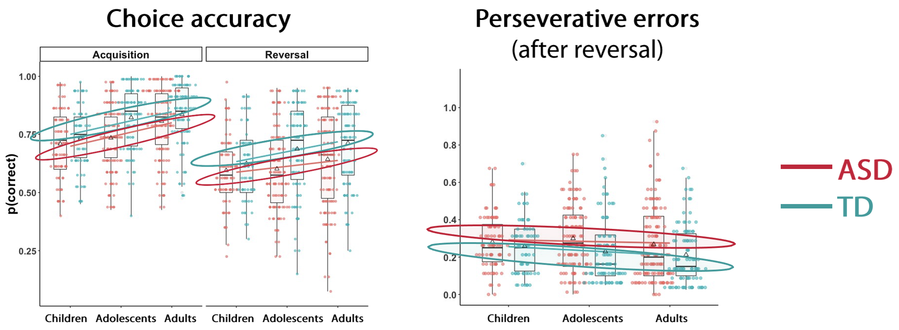
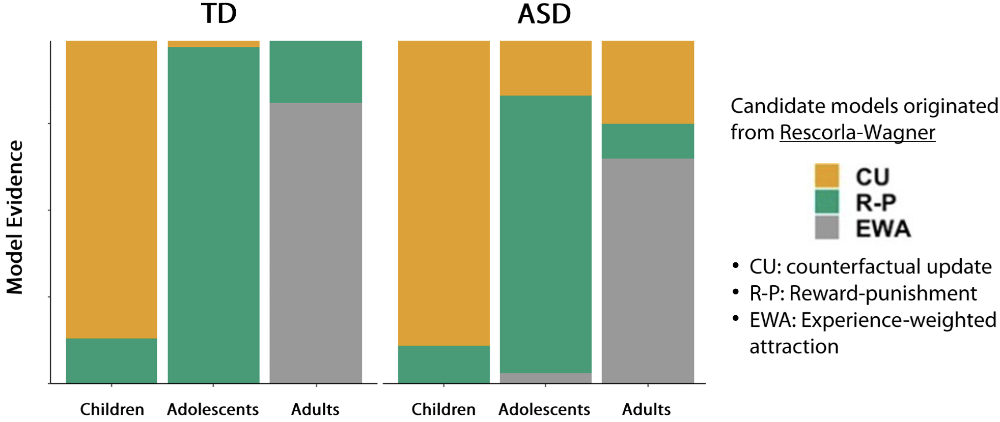
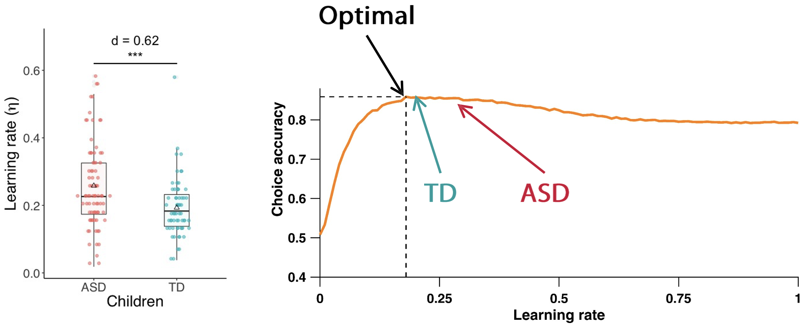
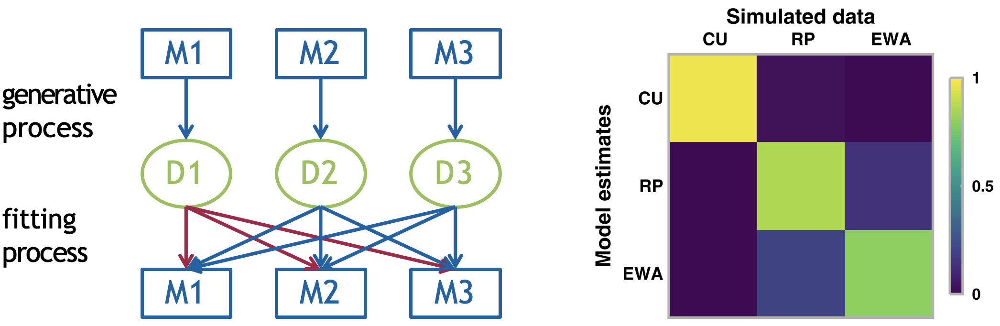
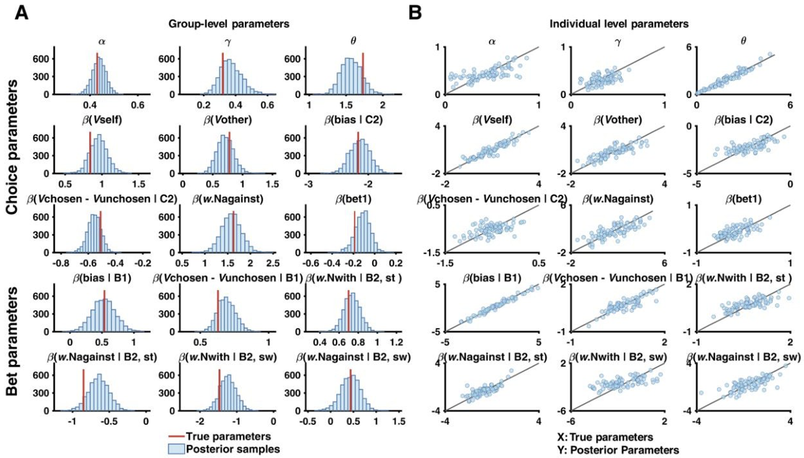
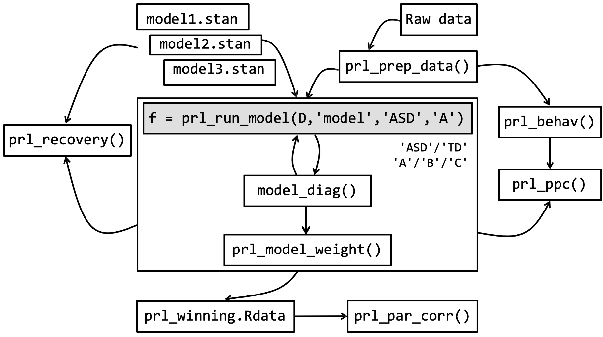

A principled modeling workflow
A case example of cognitive modeling in Stan from Crawley & Zhang (2020)
We will now look at a practical example of how computational modeling is applied by examining a modeling study1.
Crawley & Zhang (2020) - Modeling flexible behaviour in Autism Spectrum Disorder
The study aimed to uncover how people learn from feedback and adapt their behaviour, comparing individuals with and without autism spectrum disorder (ASD) across different age groups. They used a probabilistic reversal learning task where participants had to learn through trial and error which of two stimuli was more likely to give them rewards.

Dynamics and reward contingencies of the probabilistic task used in Crawley & Zhang (2020)
The reward feedback was probabilistic, in that the “correct” choice was rewarded 80% of the time and punished 20% of the time and vice versa for the “incorrect” choice. Participants must also adapt their behaviour when the reward contingencies reversed halfway through the task. Importantly, the time of the reversal was not known to the participants beforehand.

Individuals with Autism Spectrum Disorder (ASD) perform worse overall during both phases
The behavioural results indicated that overall, individuals with ASD performed less accurately than typically developing (TD) individuals during both acquisition and reversal phases. The ASD group also showed significantly more perseverative errors compared to the TD group, meaning that they continued choosing the previously rewarded stimulus despite receiving negative feedback after the reversal. This suggests that autistic individuals have more difficulty updating their behaviour in response to changing environments.
Subsequently, the authors used computational models to uncover the latent cognitive processes driving the observed behaviour. They implemented three models, all based on the classic Rescorla-Wagner (RW) learning framework:
1. Counterfactual Update (CU) model - Updates values for both the chosen and unchosen options on each trial
2. Reward-Punishment (R-P) model - Has separate learning rates for rewards and punishments, but only updates the value of the chosen option
3. Experience-Weighted Attraction (EWA) Model2 - Incorporates how much experience you’ve had with the task. As you gain experience, new information is weighted less heavily, creating a natural decrease in the learning rate over time.
The results are shown below:

Ultimately, modeling analyses revealed that different age groups were best characterized by different models:
Children were best fit by the CU model
Adolescents were best fit by the R-P model
Adults were best fit by the EWA model
Importantly, while ASD and TD groups used the same types of strategies within each age group, when examining the learning rate in children, the ASD group showed less optimal parameter values.

Learning rates in the task are less optimal for ASD compared to Typically Developing (TD) children
This suggests the core mechanisms of learning are similar, but their implementation differs, leading to the observed behavioural differences.
Model recovery and parameter recovery in Crawley & Zhang (2020)
Two key steps of any modeling analysis are model recovery and parameter recovery. Recall that parameter recovery tests if we can recover known parameter values when we fit our model to simulated data. This helps to validate that our model can reliably estimate its parameters. On-the-other-hand, model recovery helps to validate that our models are distinguishable from each other, and to identify potential co-linearity between different models.
When we see overlap between models (co-linearity), it suggests they might be capturing similar underlying processes, making it harder to make strong claims about which cognitive mechanism is actually at play.
You can see the process and example results for model recovery for the study below:

The model recovery process involving three candidate models
The diagram on the left demonstrates the model recovery process consisting of three steps:
1. Generative Process: Each model (M1, M2, M3) generates its own dataset (D1, D2, D3) using chosen “ground truth” parameters
2. Fitting Process: Each dataset is then fit with all models (shown by the arrows connecting datasets to models)
3. Recovery Analysis: We analyze how well each model fits each dataset
The right panel shows the model recovery matrix for the three models from the paper (CU, RP, EWA), where rows represent the fitted models, columns represent the data-generating models and colours indicate fit quality (yellow = good fit, purple = poor fit).
- Ideally, we want a diagonal pattern (with good fits only on the diagonal). In this case we can see the CU model’s data (first column) is uniquely fit by the CU model (yellow square), the RP model’s data shows some overlap with other models (less distinct diagonal) and the EWA model shows reasonable identifiability.
Conversely with model recovery, parameter recovery is applied to each individual model, generating synthetic data from the model using known (“true”) parameter values, fitting each model to this synthetic data to estimate parameters and then comparing the estimated parameters to the known true values.
An example of parameter recovery - from a different study3 - is shown below:

Parameter recovery results for parameters of the winning model from Zhang & Gläscher (2020)
The figure shows two key visualizations of parameter recovery:
Group-Level Parameter Distributions (left)
Depicts histograms of posterior samples for each parameter, with blue bars representing the distribution of recovered parameter values and red vertical lines show the true parameter values used to generate the data.
Good recovery in this plot is indicated by posterior distributions centered around the true values
Individual-Level Parameter Recovery (right)
Features scatter plots comparing true (x-axis) vs recovered (y-axis) parameter values. Each point represents one simulated participant and the diagonal gray line represents perfect recovery
Good recovery is shown by points clustering tightly along the diagonal line
In this example, we see generally good parameter recovery as the posterior distributions in Panel A are generally centered around the true values and the scatter plots in Panel B show strong correlations between true and recovered values.
Note that parameter recovery was performed at both the group and participant level in the example above. This is because the authors used a hierarchical model. In non-hierarchical models, one can only recover individual-level parameters!
The pipeline for conducting a modeling analysis in Stan is both systematic and rigorous. Depicted below is the example pipeline for the modeling analysis conducted in Crawley & Zhang (2020), from raw data to final model selection:

The Stan modeling pipeline for Crawley & Zhang (2020)
This pipeline, when applied more generally, can be summarised into 10 distinct steps:
1. Raw data: We begin with raw behavioural data collected from your experiment. This could be choice data, reaction times, learning rates, etc.
2. Data preprocessing (prl_prep_data): Format the raw data needs appropriately by cleaning, organizing, and structuring the data in a way that’s compatible with Stan.
3. Behavioural analysis (prl_behav): Before modeling the data, perform standard behavioural analyses to provide a baseline understanding of your data and effects that your models should be able to capture.
4. Model development (model1.stan, model2.stan, model3.stan): Create multiple .stan models are developed to test different hypotheses about the cognitive processes underlying your data.
5. Model fitting (prl_run_model): Write a central function in R which runs the Stan models with your data.
6. Model diagnosis (model_diag): After the model(s) have ran, evaluate them by checking model convergence, examining parameter distributions and running other diagnostics.
7. Model validation (prl_recovery): Validate the model through parameter recovery (whether the model can accurately recover known parameters from simulated data) and posterior predictive checks (whether the model can generate data that matches key patterns in your observed data).
8. Model comparison (prl_model_weight): Compare different models to determine which best explains your data, typically using information criteria, exceedance probability or Bayes factors.
9. Storing results (prl_winning.Rdata): Save the winning model and its results; for reproducibility share openly on OSF or GitHub alongside publication.
10. Model recovery (prl_par_corr): Perform model recovery to identify co-linearity between different models.
Footnotes
Crawley, D., Zhang, L., Jones, E. J., Ahmad, J., Oakley, B., San José Cáceres, A., … & EU-AIMS LEAP group. (2020). Modeling flexible behavior in childhood to adulthood shows age-dependent learning mechanisms and less optimal learning in autism in each age group. PLoS biology, 18(10), e3000908.↩︎
Camerer, C., & Hua Ho, T. (1999). Experience‐weighted attraction learning in normal form games. Econometrica, 67(4), 827-874.↩︎
Zhang, L., & Gläscher, J. (2020). A brain network supporting social influences in human decision-making. Science advances, 6(34), eabb4159.↩︎